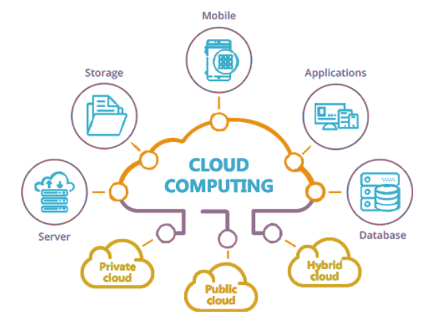

Practical Uses of Cloud Computing

- Storage and Backup: Storing and backing up data in the cloud for easy access and disaster recovery.
- Software as a Service (SaaS): Accessing software applications hosted in the cloud on a subscription basis.
- Infrastructure as a Service (IaaS): Renting computing resources like servers and storage from cloud providers.
- Platform as a Service (PaaS): Developing, testing, and deploying applications without managing the underlying infrastructure.
- Big Data Analytics: Analyzing large datasets in the cloud to gain insights and make data-driven decisions.
- Content Delivery Network (CDN): Distributing content globally to users with low latency and high availability.
- Disaster Recovery: Implementing backup and recovery solutions in the cloud to ensure business continuity.
- DevOps: Automating software development processes and collaboration between development and operations teams.
- Internet of Things (IoT): Collecting, processing, and analyzing data from connected devices in the cloud.
- Machine Learning and Artificial Intelligence: Training and deploying machine learning models in the cloud for predictive analytics.
- Testing and Development: Creating isolated environments in the cloud for testing and development purposes.
- Collaboration and Productivity Tools: Using cloud-based tools for communication, project management, and document collaboration.